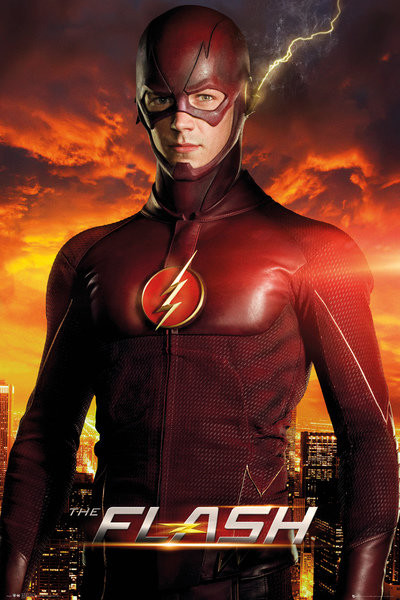

Filmy:
-
Kong skull island
Zespół badawczy składający się z naukowców, żołnierzy i poszukiwaczy przygód wyrusza na tajemniczą i od wieków fascynującą ludzi małą wyspę na Pacyfiku. Niezwykła kraina szybko jednak zaczyna przerażać uczestników ekspedycji. Boleśnie przyjdzie im się przekonać, że człowiek – mimo całej swojej wiedzy i siły – nie jest w stanie podporządkować sobie dzikiej natury. Kiedy zapuszczają się na terytorium należące do legendarnego Konga, ich misja zaczyna przypominać dramatyczną walkę o przetrwanie.Widowiskowe kino przedstawiające ostateczną rozgrywkę między człowiekiem a naturą.
-
Oficer Blart
Nie zadzieraj z jego marketem! Oto Paul Blart - zawzięty i zdeterminowany strażnik centrum handlowego. Ten gliniarz z wielkim brzuchem zrobi wszystko, aby chronić swój teren! Łagodnie usposobiony Paul Blart (Kevin James, "Diabli nadali") od zawsze marzył, aby zostać oficerem policji. Zanim jego marzenie się spełni, patroluje lokalne centrum handlowe jako pracownik ochrony. Uzbrojony w krótko przycięty wąsik, osobisty wózek i bojowe nastawienie Blart - jako jedyny - traktuje swoją pracę poważnie. Sytuacja ulega zmianie w chwili, gdy gang chuliganów napada na market i bierze zakładników. Mimo braku odpowiedniego przeszkolenia i broni, oficer Blart rusza do akcji, aby udowodnić wszystkim, że jest największym i najlepszym gliną w okolicy.
-
Akademia Policyjna
Nowa pani burmistrz ogłasza, że każda osoba może zostać policjantem, co nie podoba się dowództwu policji. Do szkoły policyjnej, pod opiekę komendanta Lassarda (George Haynes) trafia bardzo dużo ludzi, którzy na pierwszy rzut oka nie pasują do siebie. Jest wśród nich między innymi fanatyk broni strzeleckiej Tackleberry (David Graf), twardy i bardzo silny Hightower (Bubba Smith), wystraszona i skromna Hooks (Marion Ramsey), umiejący udawać wszystkie odgłosy Jones (Michael Winslow) oraz Mahoney (Steve Guttenberg) - drobny cwaniaczek, który zakochuje się w Thompson (Kim Cattrall). Mimo wielu różnic wszyscy się zaprzyjaźniają. Niestety na drodze do ukończenia szkoły staje porucznik Harris (G. W. Bailey), który zrobi wszystko, aby uprzykrzyć im pobyt w szkole i doprowadzić do ich rezygnacji
-
Baywatch słoneczny patrol
Gdy niebezpieczna fala przestępczości dociera na plażę, legendarny porucznik Mitch Buchannon (Dwayne Johnson) przewodzi elitarnej grupie najlepszych ratowników - ich misja ma dowieść, że niepotrzebna jest odznaka, by stać na straży bezpieczeństwa i uratować Zatokę. Dołącza do nich trójka ambitnych rekrutów z byłym olimpijczykiem Mattem Brodym (Zac Efron) na czele, którzy porzucili beztroski surfing na rzecz tajnej służby, chcąc dopaść bezwzględną bizneswoman (Priyanka Chopra) i zniweczyć jej przebiegły plan zagrażający przyszłości Zatoki.
Seriale:
-
SuperGirl
Kara Zor-El (Melissa Benoist) w młodym wieku została wysłana na Ziemię z niszczejącej planety Krypton. Nastolatka trafia do rodziny Denversów z Los Angeles, gdzie uczyła się kontrolować swoje nadludzkie zdolności. Po jedenastu latach jest świadkiem awarii samolotu, który spada na ziemię. Aby uratować ludzi używa swoich mocy, stając się superbohaterką.
-
Arrow
Współczesna historia Zielonej Strzały, superbohatera komiksów DC Comics. Po 5 latach od katastrofy morskiej miliarder Oliver Queen , jak dotąd uznawany za zmarłego, zostaje odnaleziony na bezludnej wyspie na Pacyfiku. Kiedy powraca do domu, rodzina zauważa, że pobyt na wyspie bardzo go odmienił. Oliver próbuje pojednać się z najbliższymi i swoją byłą dziewczyną Laurel Lance , jednocześnie kreując swoją sekretną tożsamość. Odtąd za dnia Oliver jest bogatym, beztroskim i nieostrożnym kobieciarzem, jakim zwykł być, natomiast pod osłoną nocy jako Zielona Strzała walczy ze złem i stara się przywrócić miasto do jego dawnej świetności.
-
Flash
Serial „Arrow” to współczesna historia Zielonej Strzały, superbohatera komiksów DC Comics. Po 5 latach od katastrofy morskiej miliarder Oliver Queen (Stephen Amell), jak dotąd uznawany za zmarłego, zostaje odnaleziony na bezludnej wyspie na Pacyfiku. Kiedy powraca do domu, rodzina zauważa, że pobyt na wyspie bardzo go odmienił. Oliver próbuje pojednać się z najbliższymi i swoją byłą dziewczyną Laurel Lance (Katie Cassidy), jednocześnie kreując swoją sekretną tożsamość. Odtąd za dnia Oliver jest bogatym, beztroskim i nieostrożnym kobieciarzem, jakim zwykł być, natomiast pod osłoną nocy jako Zielona Strzała walczy ze złem i stara się przywrócić miasto do jego dawnej świetności.
-
Dobre miejsce
Podczas zakupów w supermarkecie, Eleanor zostaje potrącona przez ciąg wózków sklepowych i umiera. Budzi się w Dobrym Miejscu - raju, w którym każdego czeka własna utopia, jednak zdaje sobie sprawę z pomyłki jaka nastąpiła - to nie ta Eleanor powinna się tam znaleźć. Wita ją Michael - architekt i twórca dzielnicy, do której została przypisana, i przedstawia Chidiemu - profesorowi etyki, z którym została sparowana jako „bratnie dusze”, które mają spędzić razem wieczność. Gdy przyznaje Chidiemu, że nastąpiła pomyłka, ten postanawia dawać jej lekcje filozofii, by nauczyła się, jak być lepszą osobą.